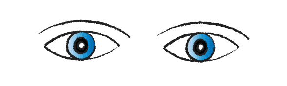

This Illustration shows a hand-drawn animation of two blue eyes being prepared as a looping GIF in Photoshop. I sketched the eyes on Adobe Illustration and used "sketchy" brush make it look hand drawen. The subtle blinking motion creates a simple yet captivating looping animation. For looping i used Timeline in Photoshop.

Click to go back to main html page